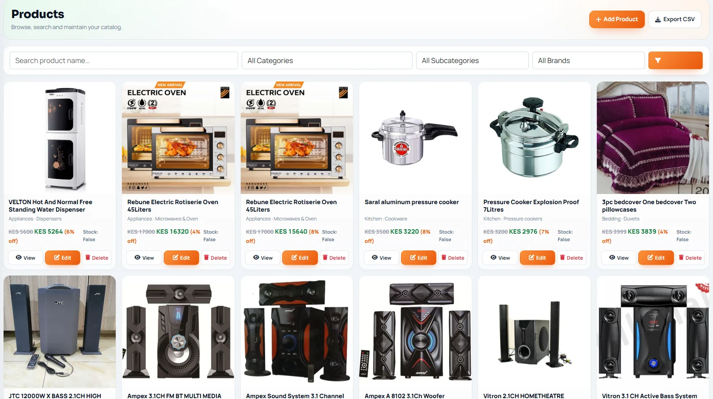
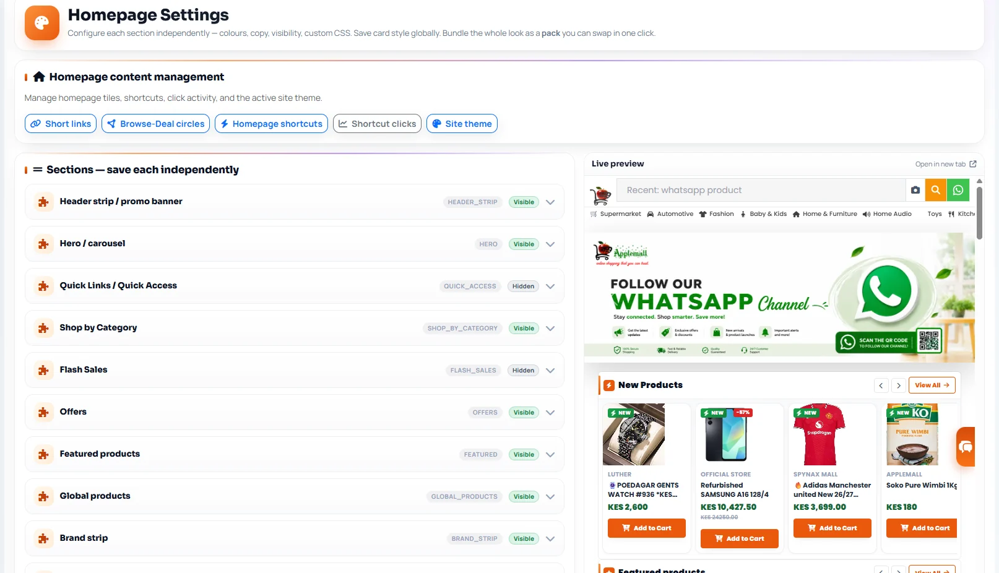
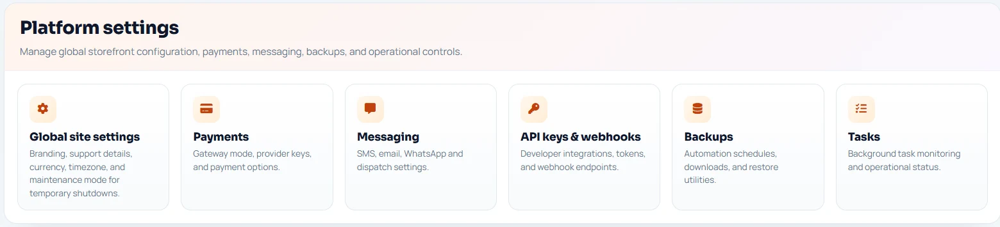
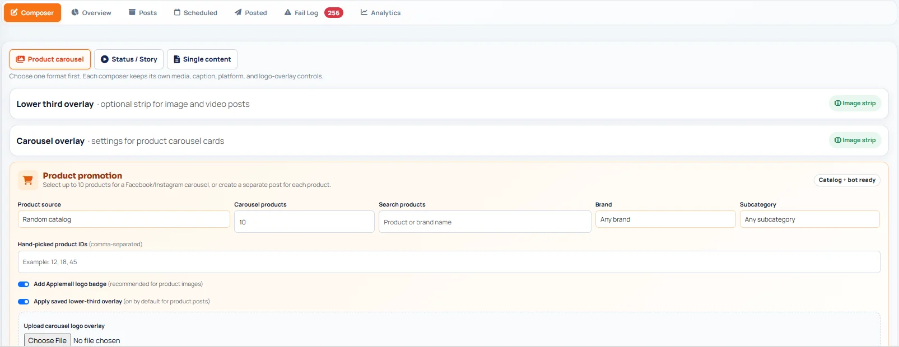
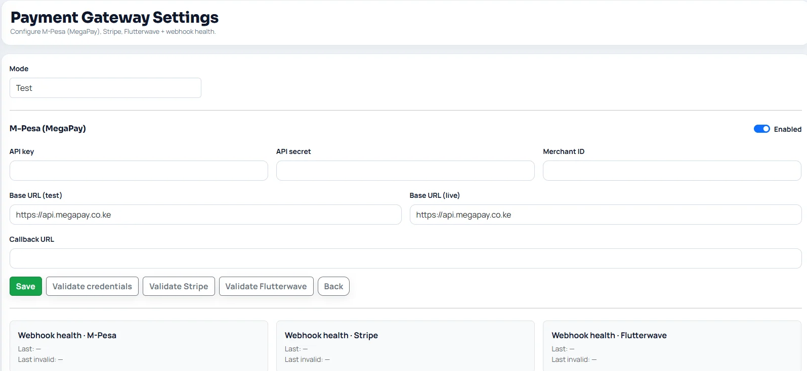
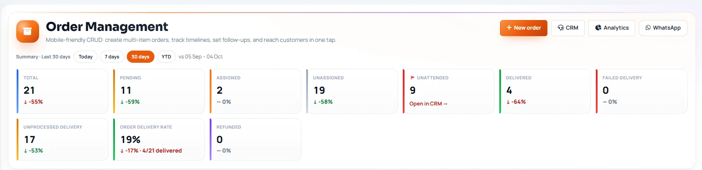
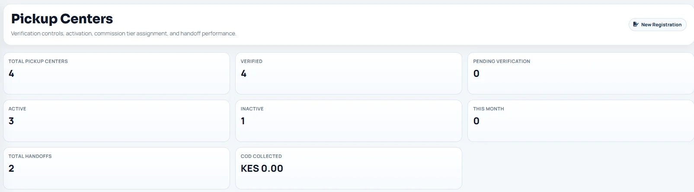

Backend development
Python · Django · Django REST Framework · Django Channels

SOFTWARE DEVELOPER · KENYA
I build end-to-end digital products across web, mobile and backend systems. My toolkit spans Python, Django, JavaScript, React, React Native, Flutter, REST API development, relational databases and third-party integrations — from user-facing interfaces to deployment and operational workflows.
I'm a Kenya-based software developer and product builder working across frontend interfaces, backend services, mobile clients and API integrations. I take products from workflow definition through implementation, integration, testing, deployment and ongoing improvement.
As founder of Applemall, I have been involved in building and operating a digital commerce business since 2018. That experience gives me a practical understanding of the users, processes and business constraints that software needs to serve.
Backend, frontend, mobile, API integration, automation and SaaS product engineering across my project work and product initiatives.
Python · Django · Django REST Framework · Django Channels
JavaScript · React · HTML5 · CSS3 · Responsive interfaces
SQLite · MySQL · Relational data modelling · Migrations
React Native · Flutter · Dart · Mobile UI · API-connected clients
REST API design · Django REST Framework · Versioned endpoints · Authentication · API documentation
Payment gateways · M-Pesa workflows · Webhooks · Social platform APIs · WhatsApp workflows · Background task concepts
Linux · cPanel · WSGI · Virtual environments · Environment configuration · Production troubleshooting
Git · GitHub · VS Code · Command line · Debugging · Testing workflows
Workflow modelling · Role-based access · E-commerce systems · SaaS product design · Troubleshooting
Multi-channel content workflows · Connected accounts · Publishing calendars · Content queues · Campaign coordination
OAuth concepts · Access tokens · Permissions · API rate limits · Webhooks · Integration error handling
Background jobs · Scheduled tasks · Retry strategies · Publishing states · Failure monitoring
AI-assisted content workflows · Post variations · Engagement metrics · Reach · Click-through reporting
Each project’s full overview, features, technical approach and status are included below on this page.
A multi-vendor e-commerce platform covering product discovery, vendor operations, order management, payment integrations and fulfilment workflows.
A live, actively developed driver jobs and services platform with driver profiles, job search, applications, employer vacancy management and in-app conversations.
A live school-management system covering learner records, fees, parent communication, teaching workflows and institutional operations.
A social media management product initiative focused on content preparation, scheduling, publishing integrations and engagement workflows.
COMMERCE PLATFORM · FEATURED CASE STUDY
A multi-vendor e-commerce and commerce-operations platform connecting customers, vendors, administrators and pickup agents through shopping, fulfilment and business workflows.

Product catalogue
Storefront controls
Platform settings
Social publishing
Payment settings
Order operations
Pickup centresSanitized product screenshots from the live commerce platform. Select any image to inspect it at full size.
Applemall is designed around the operational work required to run a marketplace: catalogue administration, vendor onboarding, order handling, location-aware fulfilment, customer communication and performance reporting. As founder and product developer, I have shaped product workflows and worked on Django application features, integrations, deployment support and operational tooling.
Product discovery, product detail, saved delivery addresses, location selection and order summaries.
Vendor verification, product counts, order history, vendor performance and profile management.
Order status tracking, timelines, assignment, pickup-centre operations and customer follow-up.
Product browsing and maintenance, category filtering, pricing, discounts and CSV export.
WhatsApp customer inbox, social publishing workflows and payment gateway configuration interfaces.
Revenue, order volume, average order value, fulfilment indicators and order-status reporting.
The public storefront is available to explore. The administration interface and commercial codebase remain private because they contain privileged controls and customer/vendor information. This portfolio does not provide admin credentials or access. Any screenshots published here must be sanitized to remove personal and operational data.
WEB + MOBILE · DRIVER MARKETPLACE
A driver-focused jobs and services platform connecting driver profiles, job discovery, applications, employer vacancies and conversations across a Django web backend and Flutter mobile client.
Drivora brings job-seeker and employer workflows together. Drivers can maintain profiles, discover vacancies and apply; employers can publish vacancies and review applicants. The mobile client communicates with a versioned REST API.
Driver profile management and CV document upload workflows.
Vacancy discovery and application submission.
Employer vacancy publishing and applicant review.
Django REST Framework API used by the Flutter client.
Django Channels-powered conversation functionality.
Token-based mobile authentication, with optional Google sign-in and SMS verification integrations.
Drivora is live at drivago.applemall.co.ke and remains under active development. The public repository provides additional implementation details. No user-scale or commercial performance metrics are claimed.
EDUCATION TECHNOLOGY · SCHOOL MANAGEMENT
A live school-management system under Gavyan, bringing learner, parent, teacher and institutional operations into a connected digital platform.
Admissions, enrolment and learner/parent portal workflows.
Assignments, learning management and virtual-classroom concepts.
Fee administration and staff payroll workflow planning.
SMS, email and push communication workflows.
Assets, stores and procurement processes.
Transport, boarding and clinic workflow concepts.
The product scope is organized around the connected work schools perform daily: maintaining accurate learner records, communicating with families, managing fees and coordinating academic and operational services. The emphasis is on coherent role-based workflows rather than a disconnected set of modules.
Gavy OS is live at gavy.applemall.co.ke. The platform continues to evolve; this portfolio describes its product scope without claiming unverified customer adoption or measured business outcomes.
SOCIAL PUBLISHING · API INTEGRATIONS
A social media management product initiative focused on bringing content preparation, scheduling, publishing and engagement workflows into one operational workspace.
Prepare post content and select publishing formats.
Manage platform account connections and publishing destinations.
Plan scheduled posts and coordinate publishing times.
Review scheduled, published and failed post states.
Bring customer engagement and social conversations into the workflow.
Provide visibility into publishing activity and channel performance.
Prepare content for supported social networks and publish to selected connected accounts.
Organize campaign posts by date, channel and publishing status.
Manage platform authorization, permissions and token lifecycle.
Use scheduled background jobs, retry handling and clear failed/successful publishing states.
Plan for comments, inbox activity and follow-up workflows in one workspace.
Track publishing performance and support AI-assisted captions and content variations.
Social publishing depends on external platform permissions, OAuth authorization, token lifecycle, API limits, content-format rules and asynchronous publishing outcomes. The product direction therefore emphasizes account connection management, scheduling state, failure visibility, retry handling and operational review. Analytics and AI-assisted content features are product capabilities under consideration, not claims of completed integrations.
Gavy Social is presented as a product initiative and workflow development, not as a publicly released service with independently verified platform coverage or adoption metrics.
Gavy OS and Drivora have live platforms and remain subject to ongoing development. Gavy Social is a product initiative. Applemall's administration interface is private; no admin access is provided. Portfolio case studies use descriptions and sanitized evidence only.
Building and operating an e-commerce business, shaping product requirements and developing digital workflows for marketplace operations.
Production operations in the yoghurt section, working within structured manufacturing and quality processes.
Yoghurt and fresh milk processing, production coordination and daily plant operations.
Farm and dairy operations management.
2013 — 2016
Map the user, business problem and workflow before choosing an implementation.
Develop maintainable application features, APIs and database-backed functionality.
Connect external services and ensure systems communicate reliably.
Test, deploy, troubleshoot and improve software as requirements evolve.
Open to software engineering opportunities in Kenya and internationally — remote, on-site or hybrid. Available to relocate for suitable overseas roles.
Connect through GitHub ↗